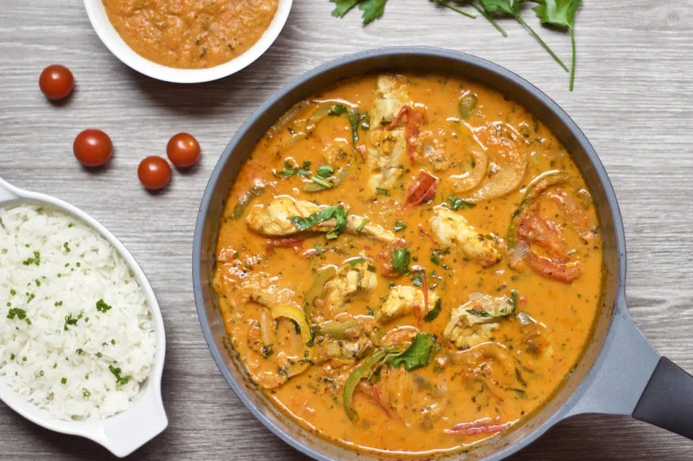
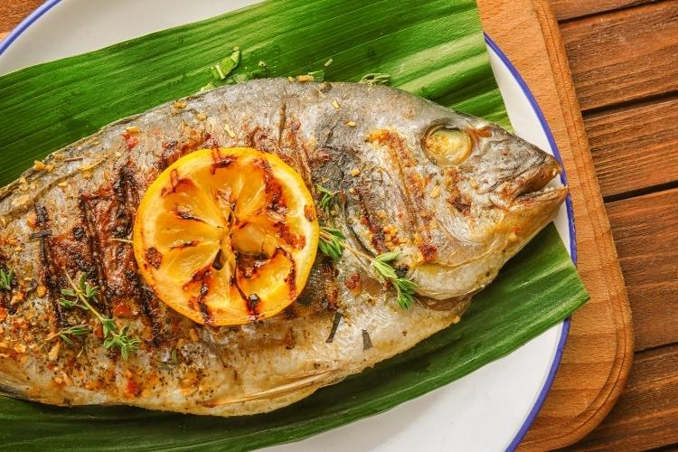
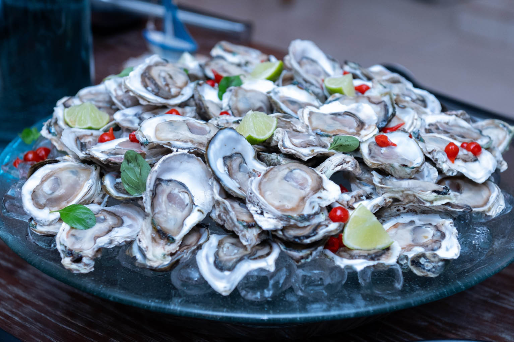

Sabores dos Nossos Destinos
Azeite de Dendê e Tradição
A culinária baiana é uma explosão de sabores e história. Em Salvador, o Acarajé e a Moqueca Baiana são paradas obrigatórias. Com forte influência africana, os pratos utilizam temperos marcantes como o azeite de dendê, leite de coco e pimenta, criando uma experiência sensorial inesquecível.

Temperos do Cerrado
No Tocantins, a gastronomia valoriza os frutos da terra. O destaque fica para o Peixe na Folha de Bananeira e pratos que levam Pequi e Buriti. A culinária local reflete a abundância dos rios e a riqueza do cerrado, oferecendo sabores exóticos e autênticos que surpreendem o paladar.

Diversidade Europeia e Marinha
Saboreie o melhor de dois mundos: a excelência dos frutos do mar aliada ao conforto da culinária clássica europeia. De Santa Catarina para o seu paladar, uma jornada que une frescor, tradição e sabores autênticos da Serra ao Litoral.
